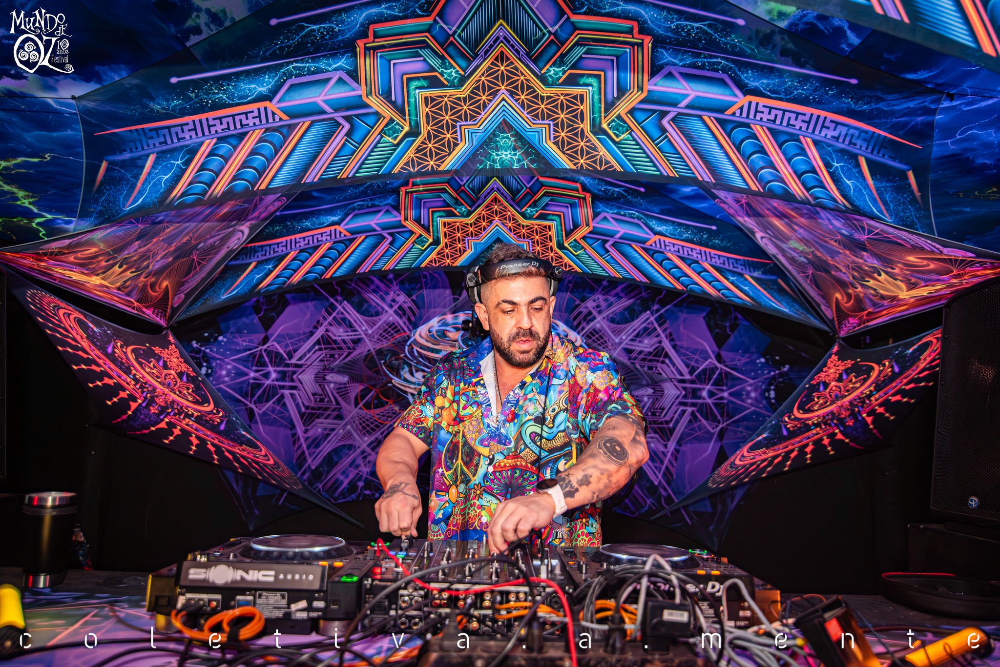
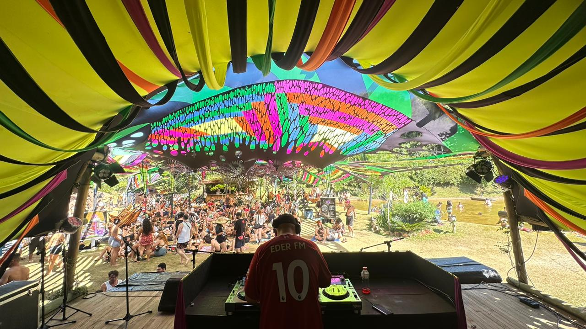

Construindo um Futuro Consciente
Nosso refúgio em Lagoinha/SP, onde Ecologia, Educação e Arte se encontram. Um espaço para se reconectar com a natureza e celebrar a vida em comunidade.
Vivências & Experiências
Muito além de um espaço para eventos, a Aldeia Outro Mundo é um ambiente vivo, onde natureza, cultura, sustentabilidade e arte se encontram. Conheça os espaços e experiências que tornam cada visita única.
Palcos dos Eventos
Os eventos da Aldeia Outro Mundo têm como objetivo compartilhar uma mensagem através da música, arte e educação, promovendo uma cultura de paz, amor, união e respeito.
A Aldeia oferece diferentes espaços para apresentações artísticas, atividades culturais, palestras, oficinas e experiências que conectam pessoas, natureza e criatividade.




Palco Principal
Este espaço é o coração dos grandes encontros da Aldeia Outro Mundo, sendo palco de experiências musicais únicas, desde shows de bandas locais até festivais com DJs de diferentes culturas.
Localizado no coração da Aldeia, o Palco Principal possui estrutura para acomodar até 7 mil pessoas, oferecendo conforto e uma atmosfera onde música, arte e conexão se encontram.


Palco Chillout
Com 32m² em uma área total de 700m², o palco Chillout é um espaço pensado para apresentações intimistas, criando uma atmosfera acolhedora e imersiva para um público de até mil pessoas.
Decorado com redário, áreas gramadas e um ambiente convidativo, o espaço proporciona momentos de relaxamento e conexão, unindo música, natureza e experiências sensoriais.


Área de Cura
A Área de Cura tem como propósito promover a conexão interior, estimular mudanças pessoais positivas e contribuir para a expansão da consciência através de práticas integrativas, terapêuticas e espirituais.
Com uma filosofia universalista, a Aldeia reúne diferentes saberes culturais, espirituais e ancestrais, sempre com respeito, acolhimento e orientação de facilitadores especializados.


Área das Crianças
A Área das Crianças é um espaço mágico criado para proporcionar momentos de diversão, aprendizado e conexão entre crianças e suas famílias.
Com atividades criativas, brincadeiras educativas e experiências lúdicas, o espaço valoriza a infância e transforma cada momento em uma oportunidade de descoberta e encantamento.


Toca da Cultura
A Toca da Cultura é um espaço de encontro, aprendizado e troca de conhecimentos, criado para conectar pessoas com ideias voltadas à evolução, consciência e transformação.
Dentro da Aldeia Outro Mundo, o espaço promove experiências educativas e culturais que unem arte, filosofia, criatividade e diferentes formas de expressão humana.


Magia Ancestral
A Magia Ancestral nasce como um caminho de retorno à essência, unindo autoconhecimento, cura energética e reconexão com os aspectos mais profundos do nosso ser.
Através de práticas ancestrais de harmonização e uma escuta intuitiva da alma, a proposta é despertar novos caminhos de consciência, equilíbrio e propósito.


D'Aldeia Gastro Bar
Fundado em novembro de 2020, o D'Aldeia Gastro Bar nasceu da reinvenção da Aldeia Outro Mundo durante um período de grandes desafios, transformando o espaço de eventos em uma experiência gastronômica única.
Unindo sabores autênticos, ingredientes de qualidade e um ambiente acolhedor em meio à natureza, o restaurante conquistou seu espaço como referência gastronômica na região.


Um Museu a Céu Aberto
A Aldeia Outro Mundo também é um espaço dedicado à arte, à sustentabilidade e à criatividade, onde bioesculturas e obras produzidas com materiais naturais e reciclados fazem parte da paisagem.
Caminhar pela Aldeia é encontrar uma verdadeira galeria a céu aberto, onde cada criação expressa conexão, respeito pela natureza e novas formas de transformar materiais em arte viva.


Acampamento Educativo para Crianças e Adolescentes
O Acampamento Educativo da Aldeia Outro Mundo tem como objetivo aproximar crianças e adolescentes da educação ecológica, proporcionando uma experiência prática de aprendizado em contato direto com a natureza.
Por meio de atividades sustentáveis, os estudantes vivenciam princípios de agrofloresta, bioconstrução e preservação ambiental, transformando a Aldeia em uma verdadeira sala de aula viva.


Festivais da Aldeia Outro Mundo
Além dos espaços permanentes, a Aldeia Outro Mundo também é palco de encontros, festivais e celebrações que unem música, arte, cultura, sustentabilidade e conexão entre pessoas.
Mundo de Oz
Realizado desde outubro de 2009, o Mundo de Oz construiu uma longa trajetória unindo música, arte, cultura, sustentabilidade e experiências transformadoras.
Ao longo dos anos, o festival reuniu milhares de pessoas entre público, artistas, colaboradores e empresas, tornando-se um encontro reconhecido por receber participantes de diferentes lugares do mundo.


Gaia Connection
Fundada em setembro de 2012 por Pedro Tiol, a Gaia Connection se tornou uma importante parceira da Aldeia Outro Mundo, conectando música, cultura, natureza e consciência ambiental.
Mais do que um evento musical, o projeto promove experiências que unem arte, educação ambiental e valorização dos conhecimentos dos povos originários.


Mundo Sol
Criado em 2019, o Mundo Sol é um evento com uma proposta ecumênica, reunindo diferentes tradições espirituais, expressões culturais e manifestações musicais em um mesmo espaço de conexão.
Com uma visão voltada à consciência e ao bem-estar, o evento une música, espiritualidade e práticas de integração entre diferentes caminhos e culturas.


Venha conhecer a Aldeia Outro Mundo
Seja para participar de um festival, celebrar um momento especial, conhecer nossos espaços ou viver uma experiência em conexão com a natureza, a Aldeia está aberta para receber você.
Entre em contato e descubra como fazer parte dessa jornada de encontros, arte, cultura e transformação.
Entre em contato